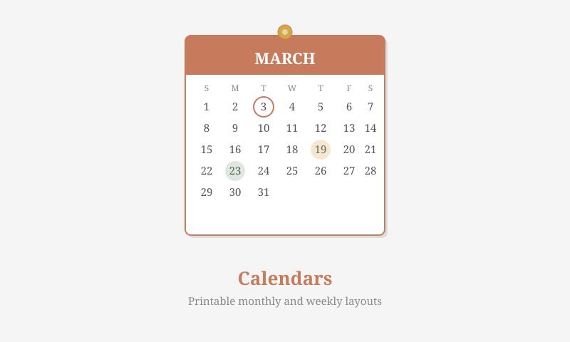
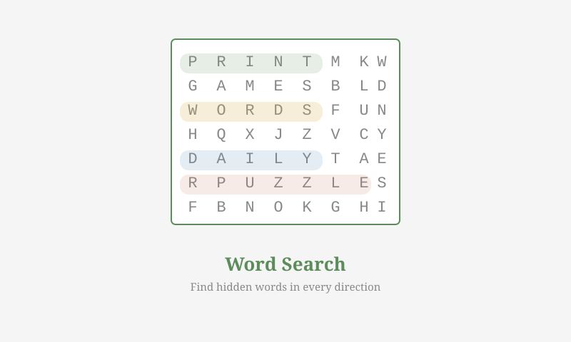
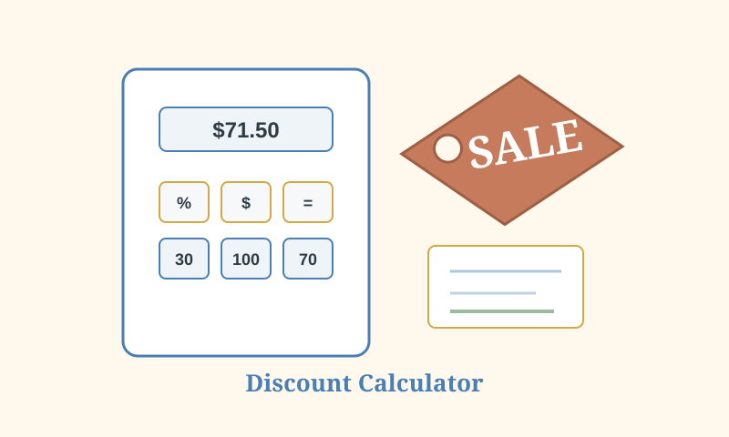
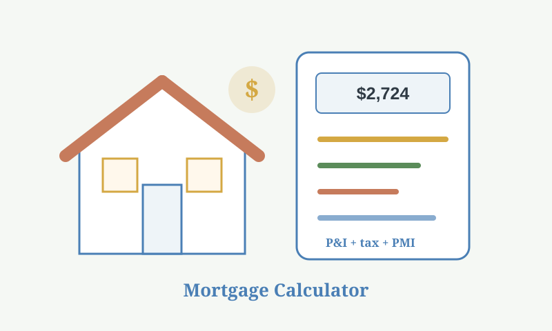
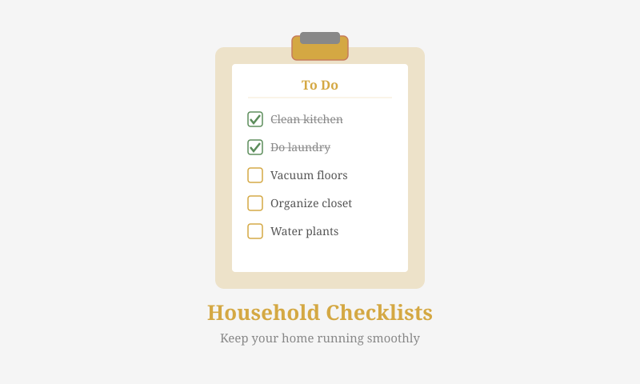
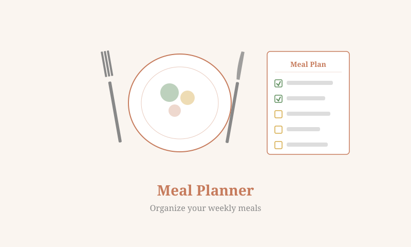

Current Search Traction Pages
These are the guide paths to reinforce first because Search Console is already showing impressions for the matching Daily Print Project pages.
2026 Calendar
Sudoku and Puzzles
Calculator Pages
July 24 GSC Opportunity Sprint
Fresh companion pages built around the exact phrases now showing impressions in Search Console.

2026 Calendar Printable Free Guide
A GSC opportunity guide for 2026 calendar, calendar 2026, yearly calendar 2026, and printable calendar 2026 searches.

Sudoku Puzzles Medium Difficulty Printable Guide
A focused guide for sudoku puzzles medium, sudoku medium, medium sudoku puzzles, and printable medium sudoku searches.

Large Print Word Search Puzzles Printable Guide
A visual support guide for large print word search, word search large print, and printable word search large print searches.
Free Online Calculator Basic Math Guide
A support guide for free online calculator, calculator, basic calculator, and everyday math calculator searches.

Discount Calculator With Tax Guide
A focused support guide for discount calculator with tax, sales tax discount calculator, percentage discount calculator, and shopping math searches.

Mortgage Calculator With Taxes and Insurance Guide
A support guide for mortgage calculator with taxes and insurance, property tax, home insurance, PMI, HOA, and monthly payment searches.
Grocery and Shopping List Template Printable Guide
A support guide for grocery list, shopping list, printable grocery list PDF, and printable shopping list template searches.
Featured Resource Paths
Start with the highest-priority guide clusters for calculators, sudoku, calendars, household lists, and offline account organization.
Everyday Calculators and Household Lists
Calculator, mortgage calculator, grocery list, shopping list, and password manager template resources.
Large Print Sudoku Puzzles
Easy-to-read sudoku resources for daily solving, seniors, classrooms, and printable puzzle packs.
Large Print Sudoku for Seniors
Readable printable sudoku grids, PDF pack, easy difficulty paths, and answer support for paper solving.
Large Print Easy and Medium Sudoku
Readable easy and medium sudoku paths with PDF answers for daily paper solving.
Sudoku Medium Printable Puzzle
Balanced printable sudoku difficulty for the current sudoku medium query cluster.
Sudoku of the Day Printable
Daily sudoku printable routine with answer support, difficulty paths, and large-print options.
Monthly Calendar Printables
Standard and large-print 2026 calendar pages for home, school, office, and family planning.
Grocery and Shopping Lists
Separate grocery and general shopping templates for weekly errands, meal prep, and budgeting.
Grocery List by Category PDF
Produce, dairy, pantry, frozen foods, household supplies, meal planning, and pantry checks.

Printable Shopping List PDF
Weekly shopping list, household supplies, mixed errands, store categories, and budget links.
What to Put on a Shopping List
Meals, pantry gaps, household supplies, errands, and budget checks for weekly shopping.
Mortgage Calculator Planning
Monthly payment estimates with related budget, shopping, and household planning resources.
Mortgage PMI and HOA Calculator Checklist
PMI, HOA fees, taxes, insurance, down payment percentages, and monthly budget scenarios.
Password Manager Template
Offline account inventory, password hints, recovery notes, and household paperwork planning.
Printable Password Tracker PDF
Password keeper printable, account log, password hints, recovery notes, and safer private storage.
Guide Library
Each guide has contextual links to the matching printable, calculator, or puzzle page on The Daily Print Project.
Open the Original Tools and Printables
Direct links to The Daily Print Project pages for printing, calculating, and planning.
Calendars and Planners
Household Templates
Calculators
About the Resource Guides
The Daily Print Project focuses on practical printable pages and browser tools for everyday planning: home lists, budget sheets, password logs, calculators, calendars, and sudoku puzzles.
This companion site adds topic guides and clean pathways into the original pages so readers can find the right printable faster.
